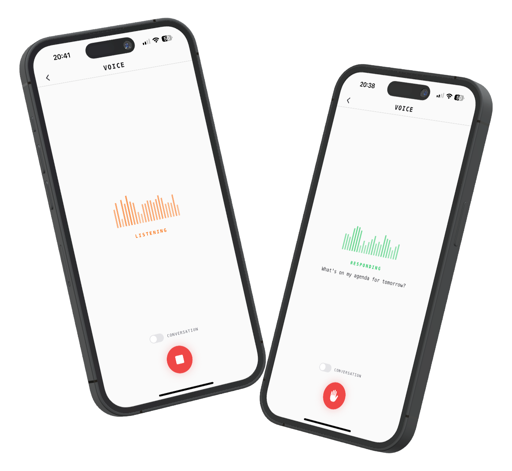

Tap the mic and speak. Your agent listens, thinks, and responds out loud. Conversation mode keeps the dialogue going hands-free. The same memory, the same tools, the same agent you chat with by text, now accessible by voice.

Typing on a phone is slow. You're cooking, driving, walking, or just too tired to type. You want to talk to your AI the way you'd talk to a person, but most agents are text-only.
Hit the microphone button and speak naturally. Real-time audio metering shows your voice being captured. Automatic silence detection knows when you've finished, so you don't need to tap again to stop.
Your speech is transcribed and sent to the same agent that handles your text conversations. It has the same memory, the same knowledge graph, the same tools. The response streams back as audio and plays in real time.
Toggle conversation mode and the agent listens again as soon as it finishes responding. No tapping, no waiting. Interrupt anytime by tapping the button. It's a natural back-and-forth, like talking to a person.
High-quality recording with real-time transcription preview. See what the agent heard before it responds. Automatic silence detection at 1.5 seconds ends the recording cleanly.
AI-generated voice responses streamed in real time. Audio plays as it arrives, so you hear the first words before the full response is ready. No waiting for the entire answer to generate.
Toggle it on and the mic reopens automatically after each response. Hands-free, continuous dialogue. Toggle it off for single-turn interactions where you ask one thing and get one answer.
Tap the button while the agent is speaking to stop it immediately. In conversation mode, it switches straight to listening. You're never stuck waiting for a long response to finish.
Animated waveform bars respond to your actual microphone input during recording. The visual feedback makes it obvious the agent is listening. Different animations for each state: idle, listening, thinking, responding.
Voice mode isn't a separate product. It connects to the same agent, the same knowledge graph, the same scheduled tasks. Ask it to set a reminder by voice and it creates a real task. Ask about your calendar and it checks.